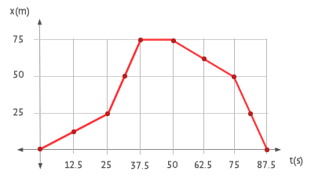

Gráficas por tramos
La siguiente animación te permite crear la gráfica por tramos a partir de los datos de posición y tiempo que hallarás en la tabla. Tendrás que mover los puntos con el cursor hasta situarlos en la posición adecuada. Finalmente, cuando ya los tengas alineados, podrás contestar a las preguntas para describir el movimiento de la gráfica.
| Tiempo (s) |
|---|
| Posición (m) |
¡Felicidades! Has colocado todos los puntos correctamente.

Preguntas
- Analiza las características del movimiento en cada tramo: dirección, sentido y rapidez.
- Construye una tabla que recoja la posición del coche cada 10 s.
- Haz un esquema con las posiciones del coche y explica cómo ha sido su movimiento.
- ¿El coche termina su recorrido donde lo empezó? Explica tu respuesta.
- Razona si la velocidad ha sido la misma durante todo del movimiento. ¿Y en cada uno de los tramos?